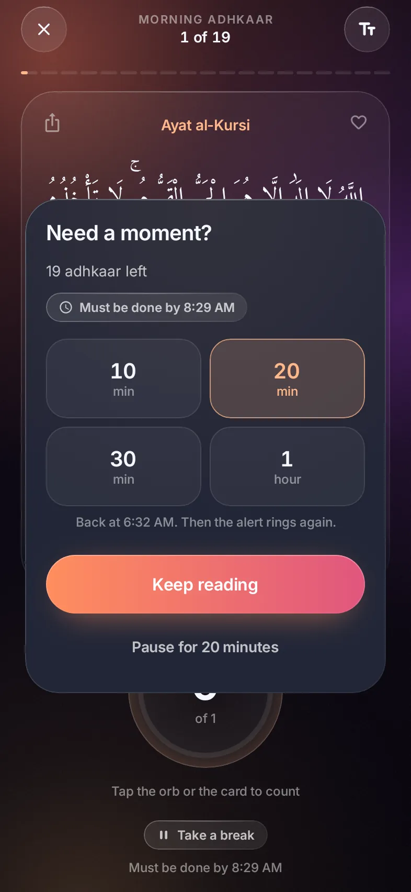
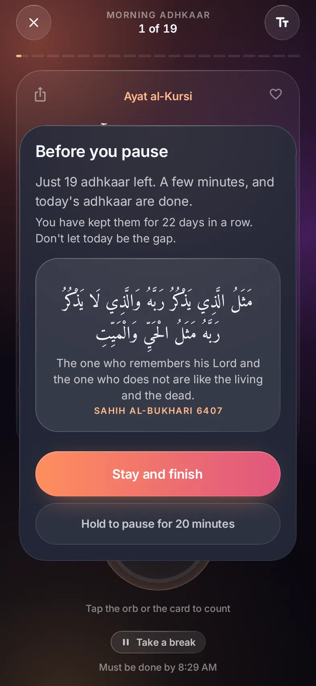

Life gets busy
A pause,
never a skip.
Busy when the adhkaar open? Take 10, 20, 30 or 60 minutes, and they come back. Pausing takes a five-second hold.


✦
مَثَلُ الَّذِي يَذْكُرُ رَبَّهُ وَالَّذِي لَا يَذْكُرُ رَبَّهُ مَثَلُ الْحَيِّ وَالْمَيِّتِ
The one who remembers his Lord and the one who does not are like the living and the dead.
Sahih al-Bukhari 6407
Morning and evening adhkaar, on time.Free for Android